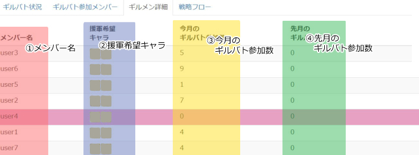
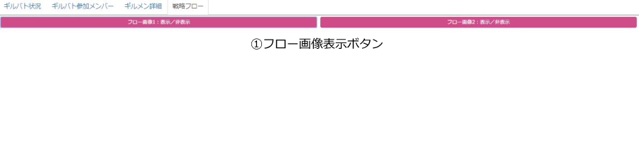
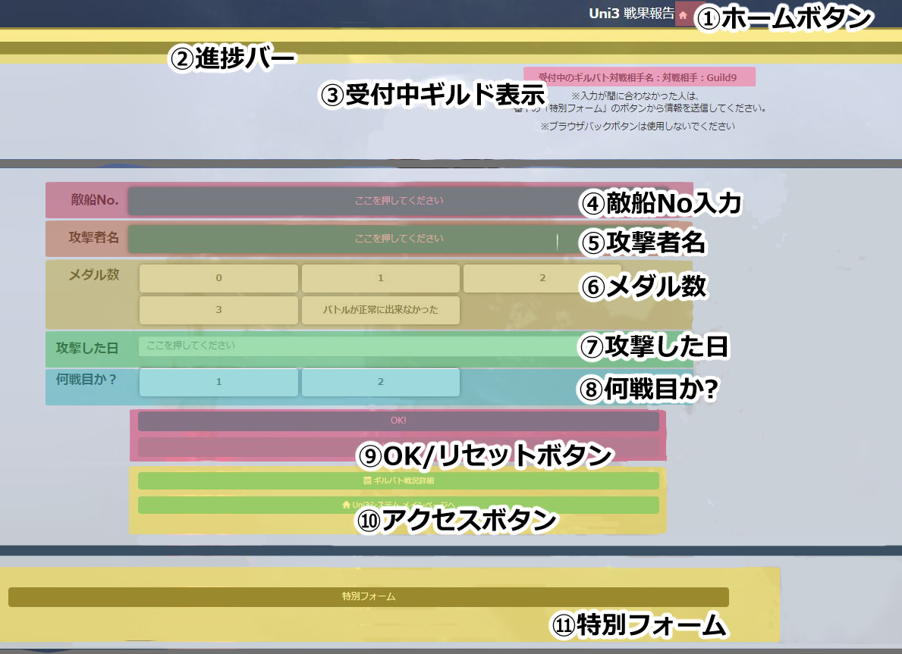

※cssフォルダやscriptフォルダ等、名前を見れば何となく内容が察しがつくようなものの説明は省きます。
htmlファイル関連
docsフォルダ直下のhtmlファイルに関する説明です。
| ファイル名 | 概要 |
|---|---|
| index.html | システムのメイン画面です。 |
| form1.html | マッチングギルド入力画面です。 |
| form2.html | 戦果報告入力画面です。 |
| flow.html | 戦果フローを表示する画面です。 メイン画面にて、iframeで表示されるページです。 |
| test.html | 画面遷移等の演出のテスト用に用意したHTMLファイルです。 現在はチュロスのアニメーションが表示されるだけのファイルです。 |
GASファイル関連
GASフォルダ内の各ファイルの説明です。
| ファイル名 | 概要 |
|---|---|
| コード.gs.txt |
Googleスプレッドシートのスクリプトコードを書いたファイルです。 |
| GAS-htmlフォルダ内の各htmlファイル | 各フォーム画面入力後に表示されるhtmlファイルを置いています。 エラー処理で遷移先が変わるため、複数のhtmlファイルがあります。 |
システムは3つの画面から成り立っています。
【メイン画面】
システムのメイン画面です。
ここから各画面へと遷移します。
※ただしマッチングギルド入力画面へはメイン画面から遷移できません。URL直打ちで遷移してください
◇ メイン画面の概要

| 項目名 | 説明 |
|---|---|
| ①対戦相手名 | 現在対戦しているギルド名が表示されます |
| ②現在の状態 |
ギルドバトルにおける、現在の状態が表示されます。 以下の3種類のうち、現在の時刻に合わせた状況が表示されます。
|
| ③「戦果報告入力画面」へのボタン | form1へ繋がるボタン |
| ④各タブ | 各タブをクリックするとその詳細が見えます 以下のタブがあります
|
| ⑤各タブの~ | 各タブの内容が表示される領域です |
| ⑥各種データベースの~ |
各種データベースの中身が見れるリンクボタンです ここからデータベースへの編集は出来ません、閲覧のみです |
◇ ギルバト状況タブ
現在のギルドバトルの、自ギルドの戦果状況が分かるタブです。

| 項目名 | 説明 |
|---|---|
| ①敵の方舟のナンバー |
対戦相手の方舟の番号が表示されます 「詳」と書かれたボタンをクリックすると、現在までにその方舟を攻めた人の名前や戦果、攻めた時間等が見れます |
| ②獲得メダル数 | 現在戦った人の中で、一番高いメダル数を取った人のメダル数が表示されます |
| ③攻めた回数 |
その方舟を何回攻めたのかが分かります のアイコン一つにつき一回です のアイコン一つにつき一回です
|
◇ ギルバト参加メンバータブ
ギルドバトルに参加しているメンバーの援軍希望キャラや各戦果状況が分かるタブです。

| 項目名 | 説明 |
|---|---|
| ①メンバー名 | ギルドバトルに参加しているメンバーの名前が表示されます |
| ②援軍希望キャラ |
メンバーの援軍希望キャラが表示されます 左側に表示されているキャラが第1希望のキャラ、右側に表示されているキャラが第2希望のキャラです |
| ③戦果表示欄 |
各メンバーのギルドバトルの戦果が分かります No.●というのがどの方舟を攻めたのか、横にあるメダルの画像がメダル獲得数です まだ攻めてないメンバーの場合は、この欄は空欄になります |
◇ ギルメン詳細
ギルドメンバーの詳細が分かるタブです。
| 項目名 | 説明 |
|---|---|
| ①メンバー名 | ギルドに所属しているメンバーの名前が表示されます |
| ②援軍希望キャラ |
メンバーの援軍希望キャラが表示されます 左側に表示されているキャラが第1希望のキャラ、右側に表示されているキャラが第2希望のキャラです |
| ③今月のギルバト参加数 |
各メンバーの今月のギルドバトルの参加数が分かります なお、参加数が0の場合そのメンバーの行の背景がピンク色に表示されます |
◇ 戦略フロー
ギルドバトルの戦略フローが参照できるタブです。
| 項目名 | 説明 |
|---|---|
| ①フロー画像表示ボタン |
クリックすると戦略フローが下のスペースに表示されます |
【マッチングギルド入力画面】
対戦ギルドの情報入力をする画面です。
ここのURLはギルドマスター陣等のシステムを運用する立場の人にのみ伝えるといいかもしれません。
| 項目名 | 説明 |
|---|---|
| ①ホームボタン | クリックでメイン画面へ飛べます |
| ②進捗バー |
③~⑥の各項目を入力ごとに、ゲージがたまります |
| ③対戦相手名 | 対戦ギルドのギルド名を入力します |
| ④マッチング日 |
一見テキスト入力欄っぽいですが、ここをクリックするとポップアップでカレンダーが出てきます これを使用して入力します |
| ⑤対戦数 |
ギルドバトルを行う方舟の数を入力します 入力はボタン形式で、クリックすると選択状態となります |
| ⑥対戦メンバー |
対戦メンバーを選択します 参加メンバーをクリックして選択します 各ボタンの名前の下部に灰色で書かれた文字は、LINEでのメンバーの名前です |
| ⑦OK/リセットボタン |
OKボタンを押すと情報送信のための確認画面が出ます なお入力不足があるとはじかれます 確認画面にてOKボタンを押すと、情報が送信されます リセットボタンは今まで入力した項目をすべてリセットします |
| ⑧アクセスボタン | 今まで戦ったギルドの情報が入ったデータベース(閲覧のみ)へアクセスしたり、メイン画面へ戻ったりできます |
【戦果報告入力画面】
各ギルドバトルメンバーが戦果報告をする画面です。
| 項目名 | 説明 |
|---|---|
| ①ホームボタン | クリックでメイン画面へ飛べます |
| ②進捗バー |
④~⑧の各項目を入力ごとに、ゲージがたまります |
| ③受付中ギルド表示 | 現在どのギルドとの対戦報告を受け付けているか、その名前を表示します |
| ④敵船No入力 |
何番の敵の船と戦ったかを入力します 「ここを押してください」というボタンを押すと、入力できるボタンが現れます 入力はボタン形式です |
| ⑤攻撃者名 |
自分の名前を選択します 「ここを押してください」というボタンを押すと、入力できるボタンが現れます 入力はボタン形式です |
| ⑥メダル数 | 何枚のメダルを獲得したか入力します |
| ⑦攻撃した日 |
一見テキスト入力欄っぽいですが、ここをクリックするとポップアップでカレンダーが出てきます これを使用して入力します |
| ⑧何戦目か？ | 一戦目か二戦目かを選択します |
| ⑨OK/リセットボタン |
OKボタンを押すと情報送信のための確認画面が出ます なお入力不足があるとはじかれます 確認画面にてOKボタンを押すと、情報が送信されます リセットボタンは今まで入力した項目をすべてリセットします |
| ⑩アクセスボタン | 今まで戦ったギルドの情報が入ったデータベース(閲覧のみ)へアクセスしたり、メイン画面へ戻ったりできます |
| ⑪特別フォーム |
受付中ギルド以外とのギルドの戦果報告をする際に用いるフォームです クリックで、④~⑨と同様の入力フォームが出てきます |